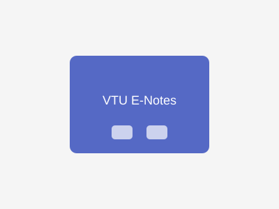

The VTU E-Notes Website is a comprehensive platform designed specifically for VTU (Visvesvaraya Technological University) students to access lecture notes, question papers, and study materials. The platform aims to simplify the process of finding academic resources for engineering students.
Access to subject-wise notes for all semesters and branches of engineering.
Collection of previous year question papers with solutions for better exam preparation.
Easily search for specific topics, subjects, or materials using the advanced search feature.
Students can contribute their own notes and materials to help build a collaborative learning environment.
Fully responsive website that works seamlessly across desktop, tablet, and mobile devices.
The project was implemented using a combination of front-end and back-end technologies. The front-end was built using HTML5, CSS3, and JavaScript to create an intuitive and responsive user interface. PHP was used for server-side scripting to handle user requests, data processing, and database interactions. MySQL database was used to store and manage all the notes, question papers, and user information.
The website features a clean and organized layout with easy navigation. Users can browse through different categories of study materials or use the search functionality to find specific content. The responsive design ensures that students can access the platform from any device, making it convenient for on-the-go learning.
Managing and organizing a large volume of study materials for different branches and semesters.
Implemented a hierarchical categorization system with branch, semester, subject, and topic levels for easy navigation and retrieval.
Ensuring the authenticity and quality of user-contributed content.
Developed a moderation system where contributed materials are reviewed before being published on the platform.